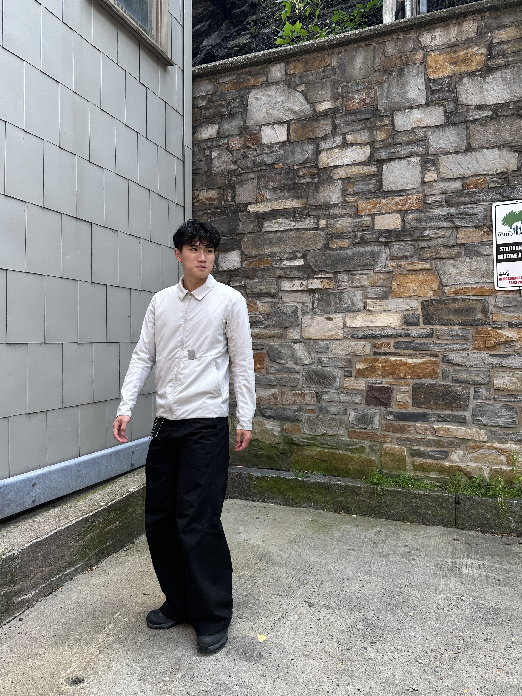
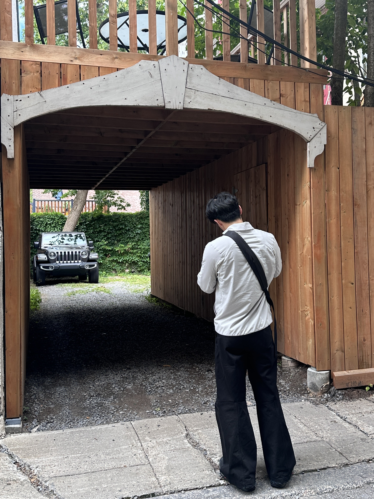

About Me
Hello! I'm Guoren Zhong, but most people know me as Kevin.
I'm a Computer Science Major studying at UC Irvine! As a CS major, I have experience in languages such as Python, HTML, CSS, JavaScript, and C++. My personal projects can be found on my Github. In addition to CS, I also have interests in photography, fashion, and traveling! Although I'm not doing paid shoots at the moment, my work can be found on the "Photography" section of this website.
